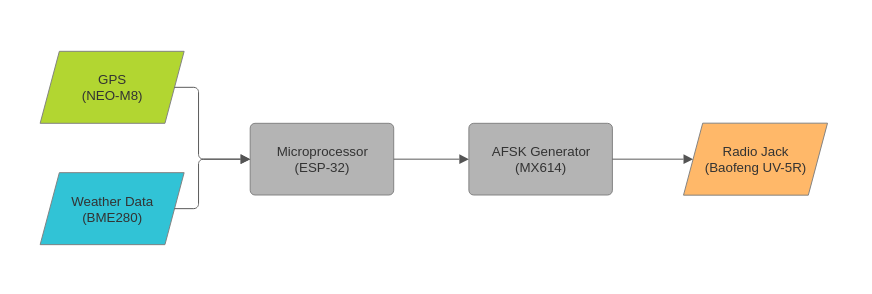
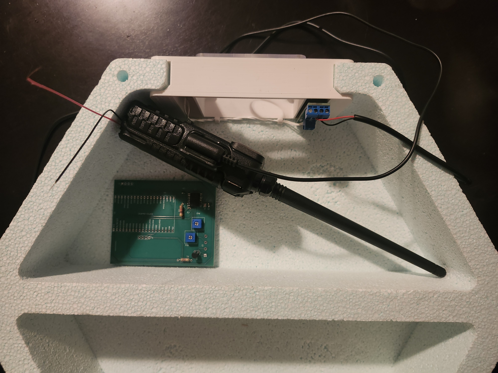
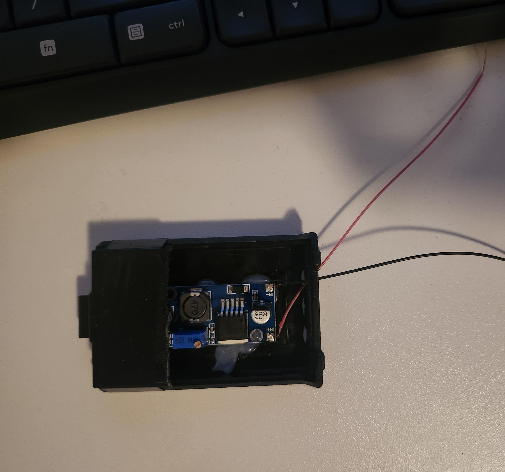
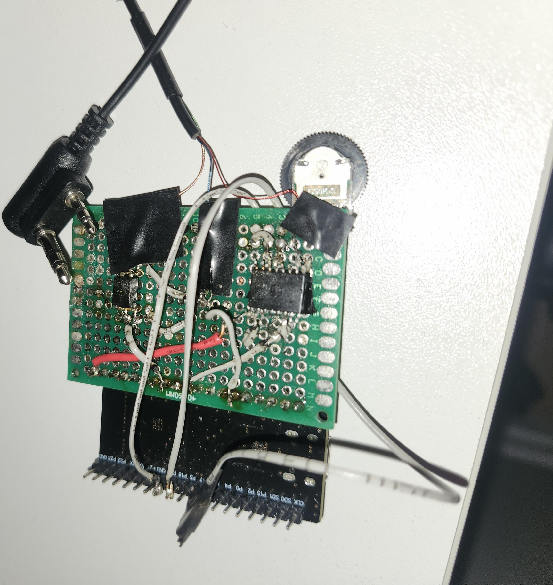
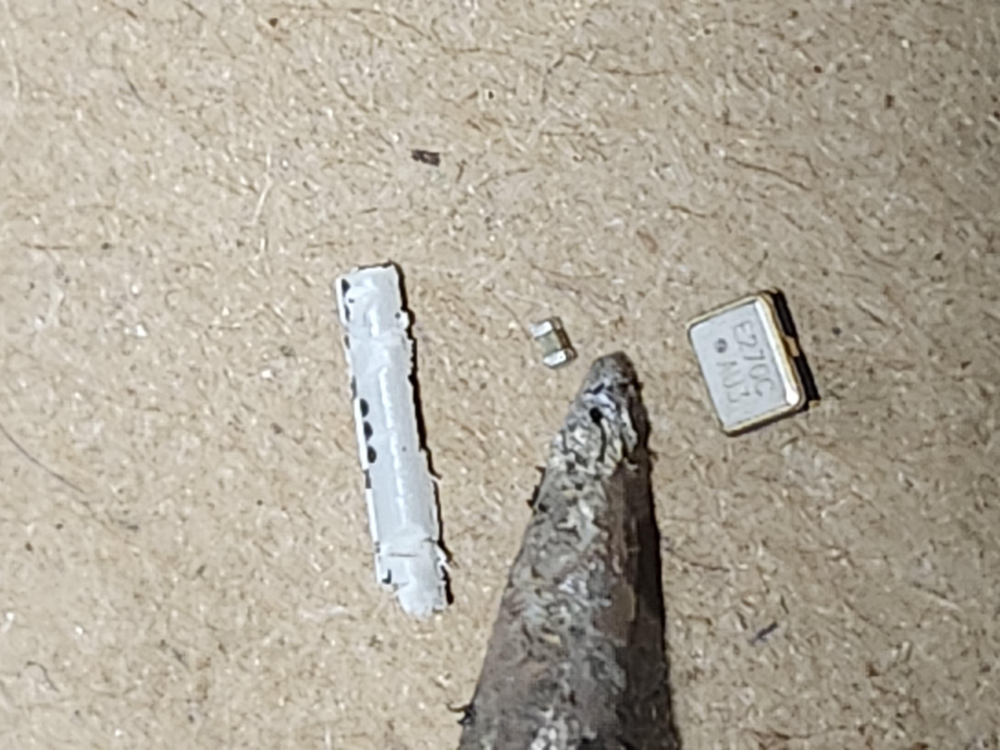
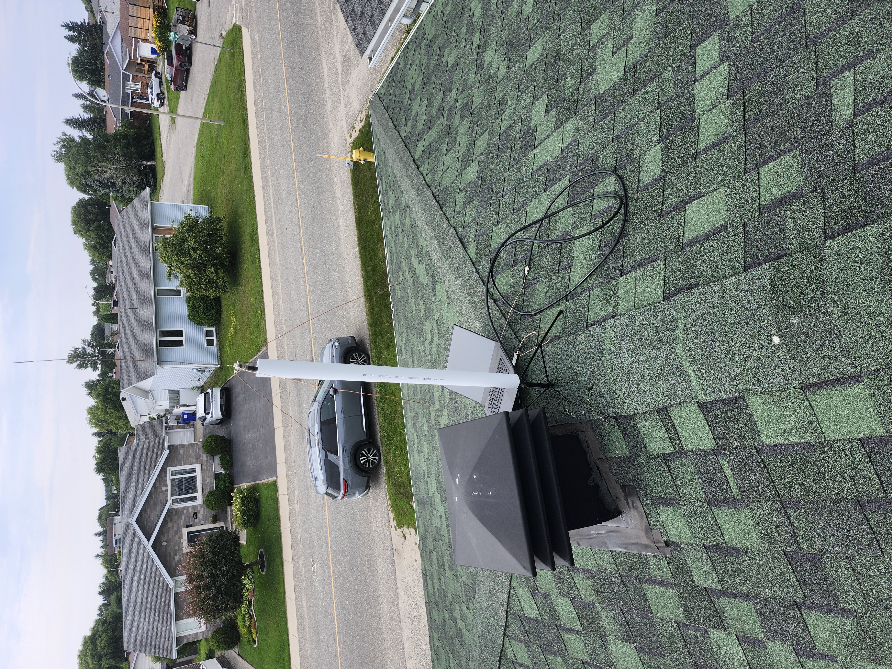

Welcome!
This site will provide live telemetry through HAM radio for the 2026 STRATOS launch.
Scroll down for more information on the project or use the menu bar to look at the data.
Launch Clock
Dependant on weather conditions
The launch was dependant on weather conditions and is now to be determined on the fly
Block Diagram

Baofeng UV-5R
It might seem like the Baofeng UV-5R is a strange choice for a weather balloon because of it's weight and size but it's price considerably lower than lighter and simpler transmiter modules. Also, in hindsight, I get to keep the radio after recovery (if it is still functional) and make it can come off as an expense for my project. :)

A problem that comes with the Baofeng it that it requires a battery. The fix was to carve out a battery casing and insert a DC buck converter to take the balloon's 25V power supply down to 8V.

Protoboard
My first idea was to simply have the ESP-32 do all the work using its I2C pins.
I quickly ran into problem because of my unorganized wiring causing interference and the frequencies generated being off frequency.
Sadly, this iteration was so unsuccessful that I didn't even bother to take a picture.
MX614
My next idea was to use a MX614 to generate the AFSK signals.
This should stabilize the frequencies given to the radio as the ESP-32 only generate the data and clock signals.
This was not the case.
The packets produced could not be decoded.
My main suspicions were the clock signal and maybe the awful spaghetti wiring causing interference.

PCB
My final design was to create a custom pcb for my project to completely remove stray wires from the module.

Even if the design had a few (many) flaws, such as the transistor being used as an optocoupler and the pins for the NEO-M8 being in the wrong order, I am happy with the design because it worked in the end.

Soldering
I still believe that the oscillator is correctly soldered to the pcb is a miracle Even if two ESP-32s were injured in the process the 2.5mm x 2.0mm oscillator was successfully secured to the pcb. Bellow is an image with the smallest soldering tip at my disposal compared to the components that were soldered.

Roof Testing
In order to test the transmiter, receiver and website I setup my ground station on my roof in order to receive packets from the payload while it was being driven around.
